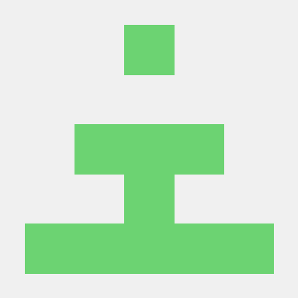
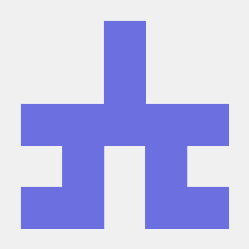
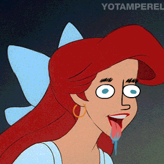

Bienvenido al tutorial de GIT cómo página web elaborado por:
| Francisco Javier Morillas Green |
Álvaro Rodríguez Romero |
Teo Walder Vásquez |
|  |
 |
 |
Para saber de algún tema en concreto, puedes usar la barra lateral y seleccionar la categoría que te interese.